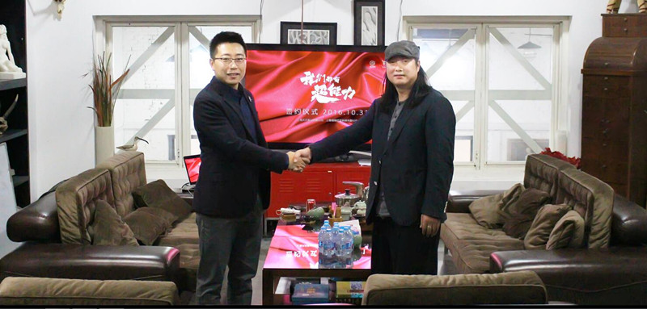
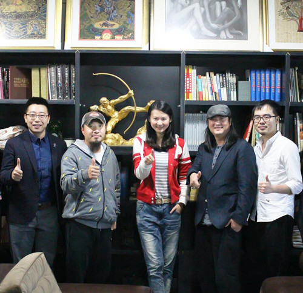

爱学派与TS传媒共同打造校园网剧《我们都有超能力》
2016年，互联网的风口来势汹汹，凭借大数据分析和视频营销的兴起，互联网+影视的模式正得到越来越多企业和大多数年轻网民的认可。十月三十一日，爱学派与TS传媒举行签约暨校园海选启动仪式，携手共同打造中国首部青春二次元网络剧《我们都有超能力》。这不仅是爱学派与TS传媒的一次强强联合，更是互联网企业与传媒文化一次大胆的交融和创新。
TS传媒拥有资深的创意策划组，知名的国内外导演组，经验丰富的执行制片组，独特视角的后期制作组，是全面地从策划—制作—发行为一体的视频内容全产业链制作供应商。此外，TS传媒还与各大电视台，网络平台建立了良好的合作关系，是当之不愧的行业领导者。爱学派CEO盛勤，TS传媒CEO成绍军，《我们都有超能力》导演徐斌，编剧李岱恩，监制黄武均到场出席了本次签约仪式。
爱学派CEO盛勤对于此次的合作，显得信心十足：“爱学派深耕校园垂直领域，对学生群体、对互联网有着非常深刻的认识和理解，这次通过校园海选大赛的品牌效应，相信能与TS传媒合作打造出一部精彩绝伦的网络影视剧。”爱学派作为校园互联网领域的一份子，要做到得不仅仅只是在生活服务上让学子们能更加便利地享受校园生活。更是希望将一种爱和文化融入到校园中，让爱学派平台在逐步发展为大学生活的 “文化交流家园”。能让全国各地的大学生都能在平台上交流，让多元的各类文化产品能在平台上流通；让不同的校园文化能在平台上碰撞出火花。
作为如今“泛娱乐”布局的重要一环，互联网企业多元业务的联动以及影视剧作品的创新探索，是互联网和影视跨界合作的重要内核。“青春”、“独特”、“关联”是爱学派对本次合作所总结的三大标签；首先，是年轻，贴合大学生的想法和新的思潮；第二，是独特，希望能有独创性，能给人意料之外的惊喜感；第三，是关联。是希望能够围绕影视剧构建一系列的与爱学派的联动，例如校园海选大赛等等，希望能在开展合作时，可以有更大空间和更多可能性，最终形成共赢的局面。
最后，《我们都有超能力》为了能让主打二次元和青春的本剧获得大学生们的认可，爱学派特携手TS传媒共同走进爱学派华理大学门店与同学们做了深入交流与沟通，在线上和线下都采集到了相当棒的建议和素材。相信经过专业编剧和导演全力以赴地艺术加工和提炼升华，最终会打造出一部真正属于大学生自己的网剧！